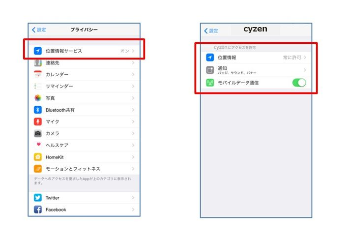

- アプリのインストール
- ストアからアプリをインストールします。
- アプリ側からのユーザー登録を完了させる
管理者から受け取った登録情報で、ユーザー登録を完了させます。
手順
- アプリの「ログイン」から設定します。
- 受け取った「ユーザーID」と「パスワード」を入力すると、ログインが完了します。

注釈
端末を更新するときなどに、このユーザーIDとパスワードが必要なので、必ず控えて保存してください。
重要
ユーザーIDとパスワードは保管しましょう！交通費の修正をするWEBサイトのログインでも必要になります。 もしパスワードを忘れたら、管理者側から再設定できます。
スマートフォンの設定
交通費自動計算はスマートフォンの位置情報取得機能を使います。そのためのスマホの設定をします。 端末によって設定方法が違います。以下を参考に設定してください。
iOS¶
GPS設定を有効にします。
- 「設定」＞「プライバシー」＞「位置情報サービス」をONにする
- 設定 > アプリ内のGPS Punch!の位置情報を常に許可、通知を許可、モバイデータ通信をオンにする
- [iOS7以降の場合]端末の「設定」＞「GPS Punch!」＞「Appのバックグラウンド更新」をONにする

Android¶
GPS設定を有効にします。
- （OS4.4以降） 端末の「設定」＞「位置情報」をON、さらに「位置情報モード」で「高精度」を選択
- （OS4.3以前） 端末の「設定」＞「位置情報アクセス」＞「位置情報にアクセス」をONに、さらに「GPS機能」「Wi-Fi/モバイル接続時の位置情報」にチェックを入れる
重要
使用を始める前に、スマートフォンの位置情報設定ONを確認！